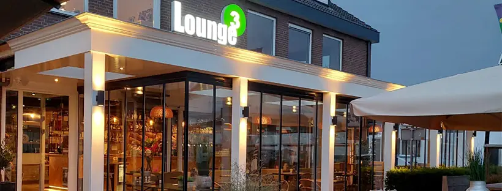
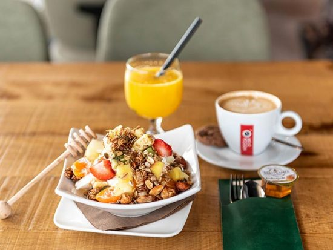
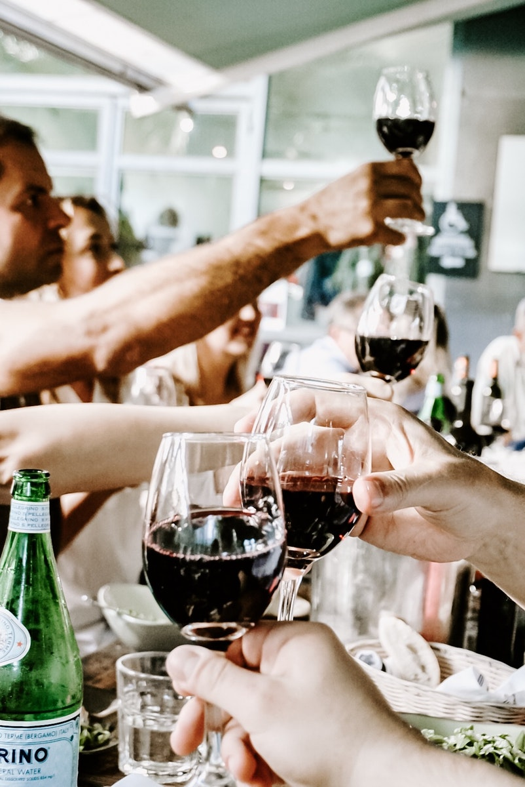

Apart zaaltje
Naast het restaurant ligt een apart zaaltje. Geschikt voor een feest met drinks & bites, een buffet of walking dinner, maar ook voor een vergadering of training.
Bel voor de mogelijkhedenKerkstraat 3, Voorthuizen
Ontbijt, lunch, diner, drinks en bites in het hart van Voorthuizen. Maandag tot en met zaterdag van 10.00 tot 22.00 uur.


Ons restaurant leent zich perfect voor een gezellig samenzijn met familie of vrienden. Wij serveren vers bereide gerechten, geïnspireerd door de Europese keuken.
Begin de dag met een verzorgd ontbijt, lunch met een broodje of een frisse maaltijdsalade, of deel 's avonds een Shared Lounging: de kok stelt voor u een selectie samen van voor-, hoofd- en nagerechten, vanaf twee personen.

Bedrijfsuitje, teamuitje, vriendenfeest, familiedag, verjaardag of vrijgezellenfeest: in Lounge3 is er ruimte voor.
Naast het restaurant ligt een apart zaaltje. Geschikt voor een feest met drinks & bites, een buffet of walking dinner, maar ook voor een vergadering of training.
Bel voor de mogelijkhedenVoor bedrijfsuitjes werken we samen met partner JP Activiteiten.
Iets bestellen of catering nodig? Mail ons en we denken mee.
contact@lounge3.nlHuur een E-chopper en rijd drie uur lang op een elektrische scooter over de Veluwe, met routes van ons. Maak er een hele dag van:
Reserveer een tafel telefonisch of stuur ons een bericht.
Lounge3| Maandag t/m zaterdag | 10.00 – 22.00 |
|---|---|
| Zondag | gesloten* |
* Behalve voor grote groepen. Gasten-wifi: L3gasten, wachtwoord welkombijlounge.